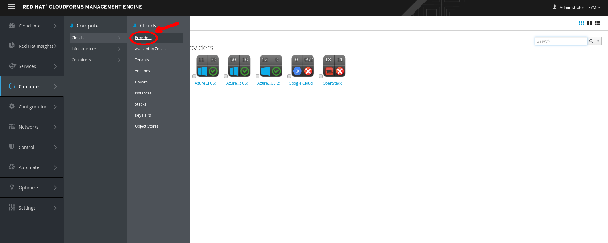
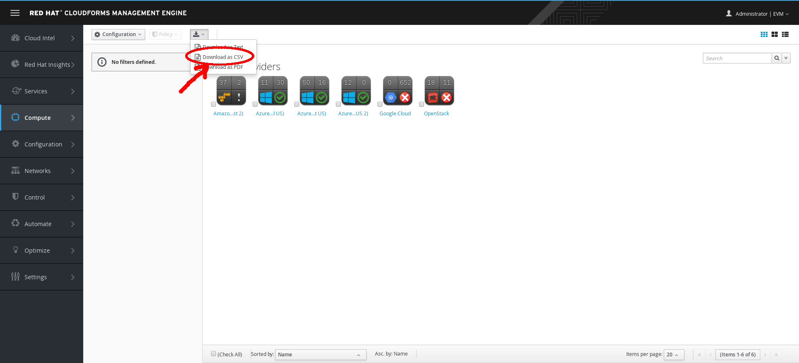
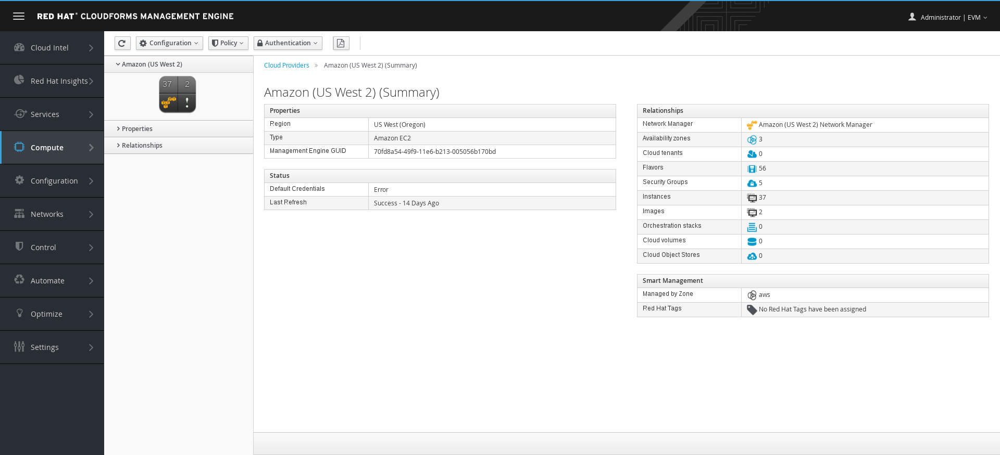
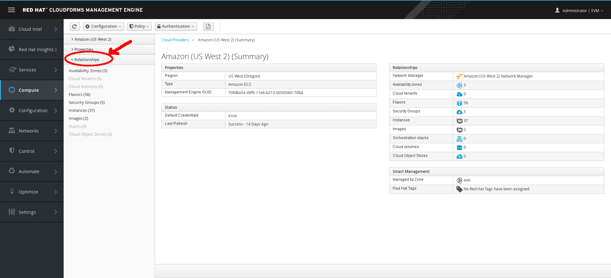

Exercise 1.6 - Explore Cloud Providers
Exercise Description
This exercise will explain how to view cloud providers and related details.
In Red Hat CloudForms, a cloud provider is a computing platform that manages instances and enables the creation of multi-tenant infrastructure services, independently from underlying hypervisors.
Section 1: Explore Cloud Providers
Step 1: Select Compute → Clouds → Providers.

Cloud Providers
A list of your private and public cloud providers, such as OpenStack and Amazon EC2, displays.
Step 2: To add Amazon EC2 or Microsoft Azure as a provider, use either (Configuration) and
(Discover) or (Configuration) and (Add).
Step 3: To add OpenStack or Google Compute Engine as a provider, you must use (Configuration) and (Add).
Section 2: Explore the Virtual Thumbnail for Cloud Providers
The web interface uses virtual thumbnails to represent providers. Each thumbnail contains four quadrants by default, which display basic information about each provider.

Example Virtual Thumbnail
Step 1: View the following:
- The top left quadrant shows the number of instances defined in the provider.
- The top right quadrant shows the number of images available in the provider.
- The image in the bottom left quadrant represents the type of provider (only Amazon EC2 or OpenStack are shown).
- The bottom right quadrant shows the status of the provider.
- A (Policy) in the center indicates that this host has one or more policies applied.
Step 2: In the top right corner of the window, click to toggle between Grid, Tile, and List views.

Top Window Navigation
Step 3: Click (Download) to download a list of cloud providers.

Download Cloud
Step 4: Select the Amazon (US West 2) Amazon EC2 cloud provider.

Cloud Dashboard
Step 5: Click the Relationships tab and review the kind of information CloudForms gathers from a provider.

Cloud Relationships